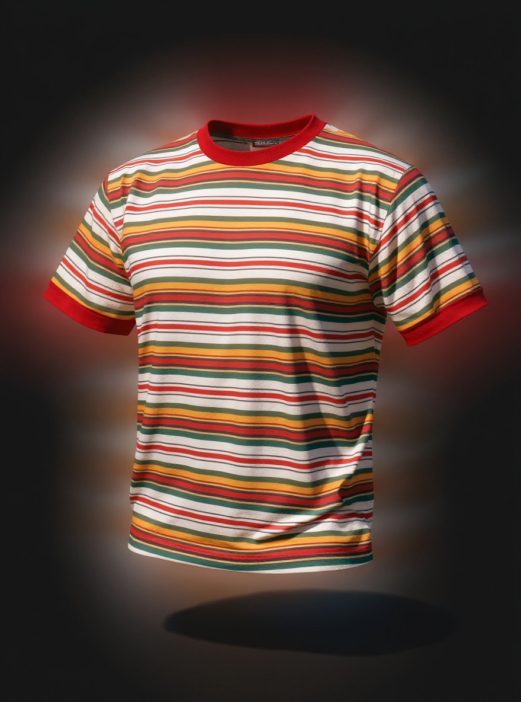

CLUB
CLASSICS

RIMBERIO CLOTHES
@REALLYGREATSITE / REALLYGREATSITE.COM
12.03.25
OUR CLOTHING IS DESIGNED AND MADE WITH CARE FOR THE ENVIRONMENT, USING ONLY 100% ORGANIC MATERIALS. WE BELIEVE IN SECOND CHANCES, SO IF YOU BRING YOUR CLOTHES FOR US TO RECYCLE, WE'LL GIVE YOU A 10% DISCOUNT ON YOUR NEXT PURCHASE.